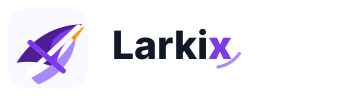
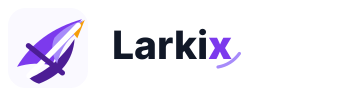
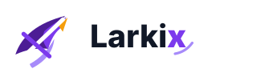
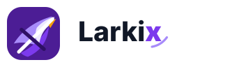

Larkix Soar X 5 选 1
这组重新把“鸟准备翱翔”放到第一识别层：头部、喙、上扬主翼都保留，但仍然极简；X 变成翅膀内部的结构切口。
本轮修正：不再只做抽象上升符号；第一眼必须像正在向上起飞的鸟。



这组重新把“鸟准备翱翔”放到第一识别层：头部、喙、上扬主翼都保留，但仍然极简；X 变成翅膀内部的结构切口。
本轮修正：不再只做抽象上升符号；第一眼必须像正在向上起飞的鸟。



